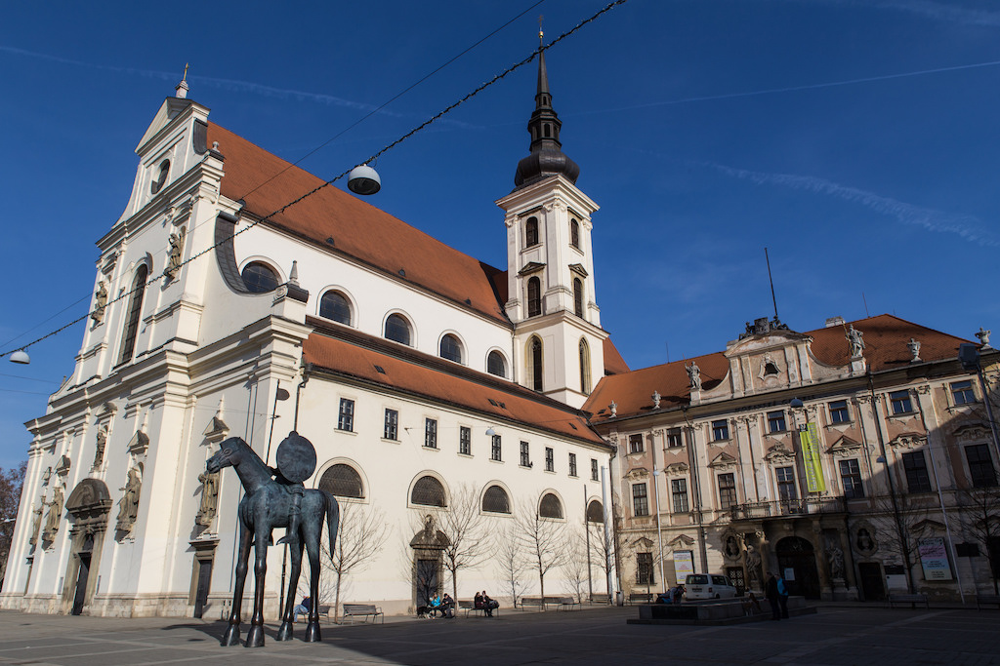
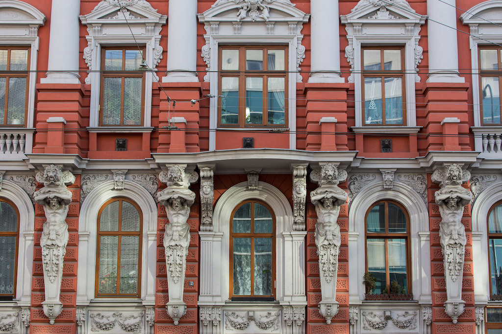
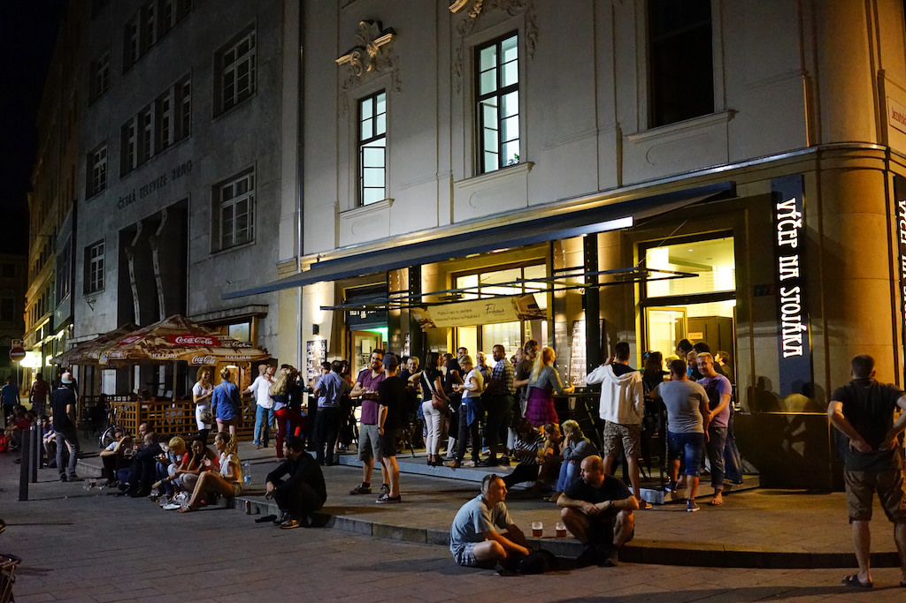
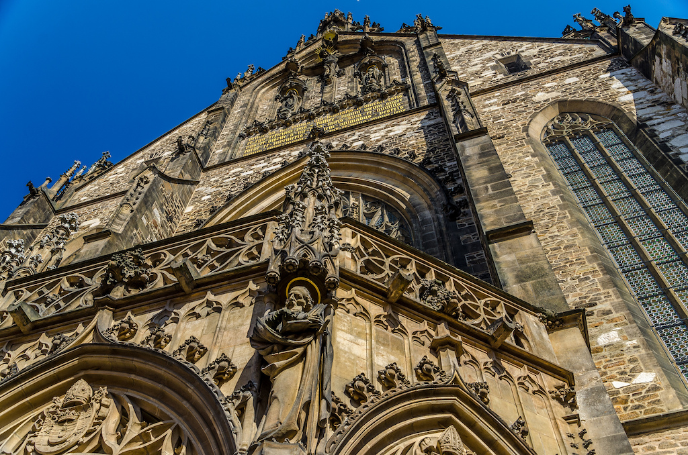
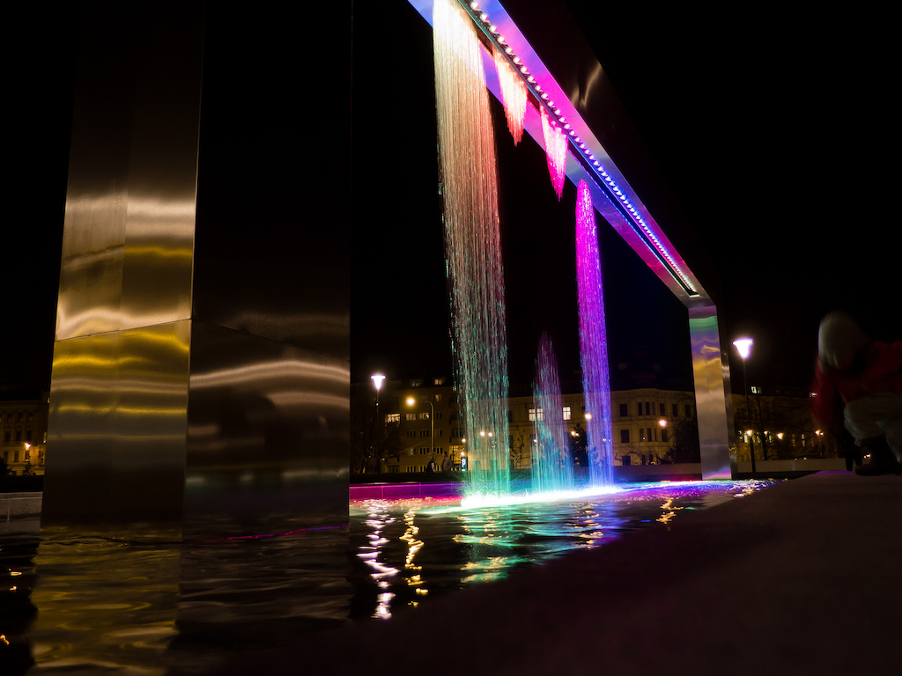
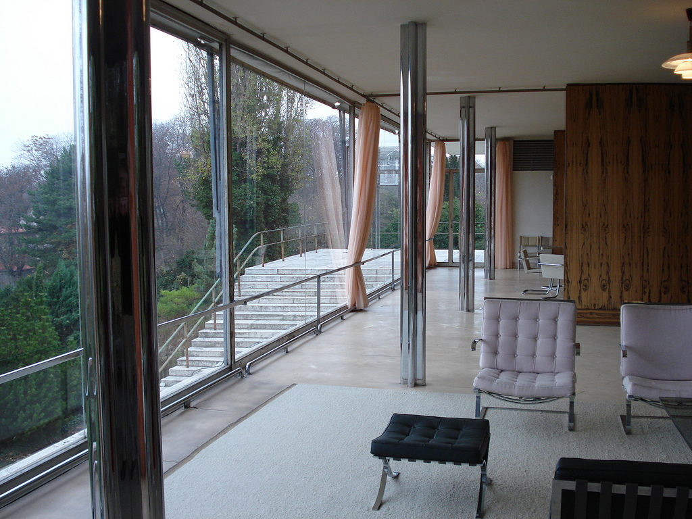
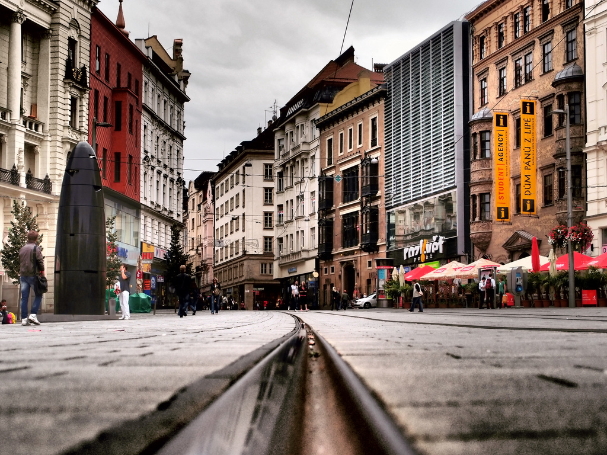

Learn more about Brno! To make your stay as comfortable as possible, we even hired a local journalist and blogger to write a nice, dedicated guide for you:
ProTip™: In the early morning of Sunday 30th Oct, 3am will become 2am! The Czech Republic will transition from CEST to CET.
 Statue of Jošt of Moravia. Photo by Carolien Coenen
 Historical downtown. Photo by Carolien Coenen
Listed among the top 10 of the best alternative city breaks in Europe by The Guardian and 52 Places to Go in 2016 by The New York Times, Brno is having its sweet moment right now: offering many great things to see and do, yet still not spoiled by tourism and commerce. You won't regret spending an extra day or two in the city.
Since the 1920s, Brno has been internationally recognized for its modernist architecture. In the 2010s, local cafés, restaurants and bars have attracted a country-wide attention and several exceptional works of art have been installed in the streets.
Is Brno safe? Just like a city in any other middle-sized central European country. Don't leave your camera or computer on the back seat of a street-parked car and you'll be fine.
However, if anything goes wrong, call the emergency number 112.
Is Brno friendly? It is, just remember that many people are not used to speaking foreign languages. Saying "nerozumeem" is the simplest way of telling them you don't understand Czech.
How should I move around the town? Brno has an excellent system of public transport. To travel between FIT VUT (the venue where PyCon takes place) and the center of the town, tram line #1 is the best option. Fast bus lines #90 and #91 go that way from 10:30 p.m. to 4:30 a.m.
One hour tickets can be purchased for CZK 25 in yellow vending machines throughout the town; some of the machines located nearby the train station accept credit cards. The tickets are also available in most newspaper stands. A 24 hour ticket for CZK 90 may be useful, too. Owners of Czech SIM cards may also pay by sending a text message to 90206; its content can be "BRNO20" (20 minutes, CZK 20), "BRNO" (75 minutes, CZK 29) or "BRNOD" (24 hours, CZK 99).
Lidotaxi is one — not the only one — of well-established taxi companies: call (+420) 542 214 221. While Uber is not yet available in Brno, Liftago app provides a very similar experience.
Although there will be enough food and coffee for every participant, you may fancy a short walk and some quiet time spent alone. PyCon CZ takes place at the Faculty of Information Technology (1 Božetěchova St) located in a former Carthusian monastery in Královo Pole quarter. Recommendable places within a 10-minute walk are:
Slovanské náměstí: this square is one of the city’s most beautiful parks.
Probably the best meals in the neighborhood are served in Velorex Restaurant, a nice new place with a legendary three-wheeled Velorex car on display. 162 Palackého St, restauracevelorex.cz
Pad Thai: the name says it all. 124 Palackého st., padthairestaurace.cz
Pivní lokál U Bomby is a small pub serving craft beer from local breweries. 11 Husitská St
In further 10 minutes (or in a 5-minute ride with tram #1 total) you may reach:
Golden Nepal, probably the best Nepali/Indian restaurant in the town. 51a Kotlářská St
A less known, yet excellent small café Bílý králík, roasting their own coffee and making their own caffeine soda. 29 Staňkova St
Located right across the main train station, Quick bistro is a revival of the "milk bars" popular in the socialist era. The casual spot offers many Czech classics, such as trippe soup or beef in creamy sauce with dumplings, for very affordable prizes.
4 Nádražní St, quickbistro.cz
Set in a copy of the oldest modernist café in Brno (built in 1926, demolished in 1964, rebuilt in 1994) and led by a young wonder chef Jan Kaplan, Pavilon restaurant promises and delivers the most exclusive dining experience in Brno.
6 Jezuitská St, restaurant-pavillon.cz
Members of large Vietnamese community run several restaurants serving authentic meals in downtown Brno. Gỗ is the most beautiful one, designed by architect Martin Hrdina. The meals level up the interior.
4 Běhounská St, brnogo.cz
Beloved by local coffee afficionados, SKØG café serves top quality beverages (including wine and beer) in a loft space at one of the main squares.
5 Dominikánské Náměstí Sq, skog.cz
Na stojáka is probably the most popular pub in the town, although (or maybe because) it has no chairs to sit on. People drink their beers standing both inside the pub and outside it at a lively small square.
16 Běhounská St, vycepnastojaka.cz
Bar, který neexistuje ("The Bar that Does not Exist") occupying three floors of a former bank became an overnight hit in 2013 and is still enormously popular. Great atmosphere and drinks.
1 Dvořákova St, barkteryneexistuje.cz
Secret bar Super Panda Circus deserves every award it has received, just like the favorable mention it has got in New York Times. Hidden behind unmarked door, Panda takes people to whole other worlds, where drinks are served in glass slippers and everything seems like a weird, yet highly enjoyble dream. Hosting only small groups and just for two hours maximum.
3 Šilingrovo Náměstí Sq, superpandacircus.cz
 Lively Bar Na Stojáka. Photo by Dion Hinchcliffe
 Cathedral of St. Peter and Paul. Photo by Daniel Kakiuthi
Contrary to the more famous astronomical clocks in Prague and Olomouc, Brno astronomical clock is a very modern piece of art, completed in 2010. For some, even too modern. Black and bullet-shaped, it is supposed to commemorate the battle of Brno of 1645, in which the local army defeated Swedish forces near the end of the Thirty Years' War. Yet many consider it to be purely just a phallic symbol. Every day at 11 a.m., a ball falls through the sculpture, free to take away for anyone who catches it. A funny thing about the clock is that almost no one, including its authors, is able to read its symbols to tell the time. Náměstí Svobody Sq
Just when people of Brno got used to the phallic astronomical clock, an equestrian statue of Jošt of Moravia (a Margrave of Moravia from 1375 to 1411) was erected nearby. Several days after, someone revealed that if a person stands between the horse’s legs and looks upwards, the horse's head looks just like a fully erected penis. Since that moment, you may have seen whole queues waiting to take that look. The statue soon got listed among the 10 of Europe's oddest attractions and events in The Guardian. Its author, Jaroslav Róna, claims that he hadn't intended to create such illusion. Moravské náměstí Sq
A fountain built in 2014 in front of Janáček's Opera is quite unlike any other fountain, as it displays various messages and ornaments, created just by a play of water and light. The show goes on every evening, unless the weather gets too cold. Between Moravské Náměstí Sq and Koliště St
In the 1920s and the 1930s, Brno was an important cultural hub of Czechoslovakia, and one of the world's centers of modernist – especially functionalist – architecture. For a great and deep guide to all the important works, check out Brno Architecture Manual. In the historical center, the most notable constructions are: Avion hotel by Bohuslav Fuschs, one of the narrowest hotels in Europe, just eight meters wide (20 Česká St); Moravian bank by Bohuslav Fuchs and Ernst Wiesner (21 Náměstí Svobody Sq); Baťa department store "Centrum" by Vladimír Karfík, originally planned as the tallest skyscraper of Europe (100+ meters), but finally only the bottom 6 floors were built due to unsuitable subsoil (24 Kobližná St).
Villa Tugendhat got listed as a UNESCO World Heritage Site in 2000. Designed by Mies van der Rohe as a residence of the young family of Fritz and Greta Tugendhat, it was completed in 1930 for a price of 20 or more luxurious villas. A guided tour of the simple modernist interiors is highly recommended, however it has to be booked several weeks in advance, due to the enormous popularity of the sight and its limited capacity. A tour through the gardens is possible without a reservation, however it is somehow pointless as the idea of the villa was to look as modest as possible from the outside while being extra luxurious inside. 45 Černopolní St
Moravian Gallery hosts the 27th International Bienall of Graphic Design until October 30. If you miss it, the permanent display of applied design is still recommendable. 27.bienalebrno.org
Fait Galery displays a valuable selection of works of contemporary Czech visual artists in a beautiful old factory hall near by the city center. 2 Ve Vaňkovce St
 Fountain in front of Janáček's Opera. Photo by Janovlk
 Villa Tugendhat. Photo by Timothy Brown
USE-IT maps are paper tourist guides for young people, from young people. Made by locals, no-nonsense, non-commercial, free, and up-to-date. USE-IT map of Brno is very well maintained and PyCon CZ highly recommends you to get one!
You can get this map for free at various places in Brno.
Unless you're from London, Munich, or Eindhoven, do not fly to Brno (BRQ). It's not convenient and usually very expensive. However, if you by any chance end up at this small airport, enjoy its modern architecture and take bus #76 to the city center.
Accessing Brno through Vienna or Prague is fast, comfortable and cheap:
Small Bratislava airport is RyanAir hub, so it might be useful when hunting cheap flight tickets within Europe. There are also tiny international airports in Ostrava (Paris, London) and Pardubice (Saint Petersburg, Moscow). Both have an excellent connection to Brno either via bus or train.
 Náměstí Svobody Sq. and its phallic astronomical clock. Photo by VnGrijl
Hotel Avanti **** is offering a discount for all attendees of PyCon CZ 2016. Just let the receptionist know you attended PyCon CZ 2016 and they'll give you a reduced price offering for your stay. For classic, single room it will be CZK 1300 per night.
Otherwise, both Airbnb and Booking.com are at your service in Brno. For adventurous minds, there's always also CouchSurfing. Other options nearby the venue:
Except for Hotel Avanti ****, PyCon CZ 2016 has no agreements with and is not associated with any of the hotels above. They're sorted by perceived budget requirements and distance from conference venue.
Never been to the Czech Republic? Here's some practical info: